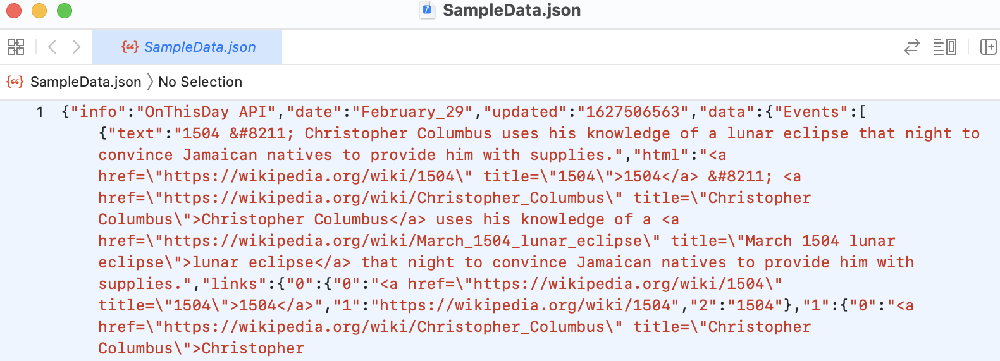
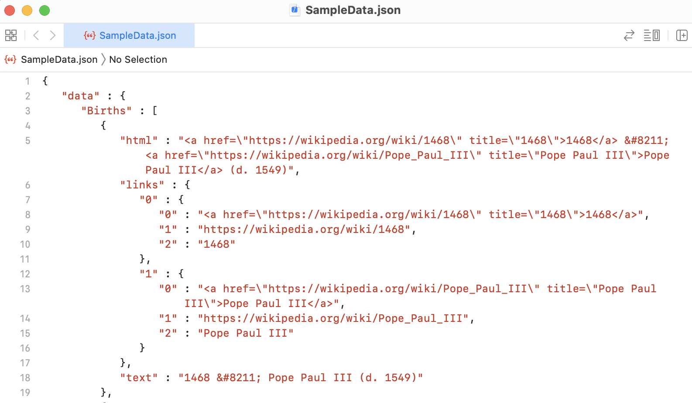
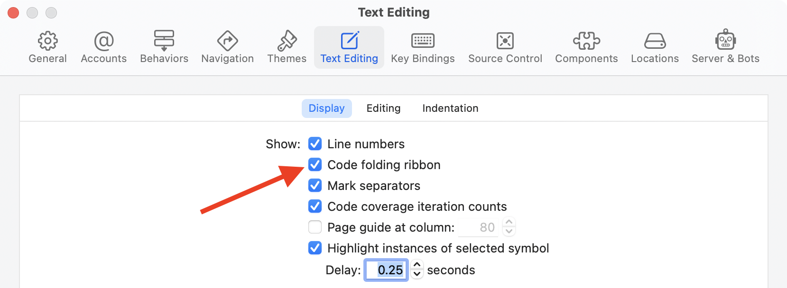
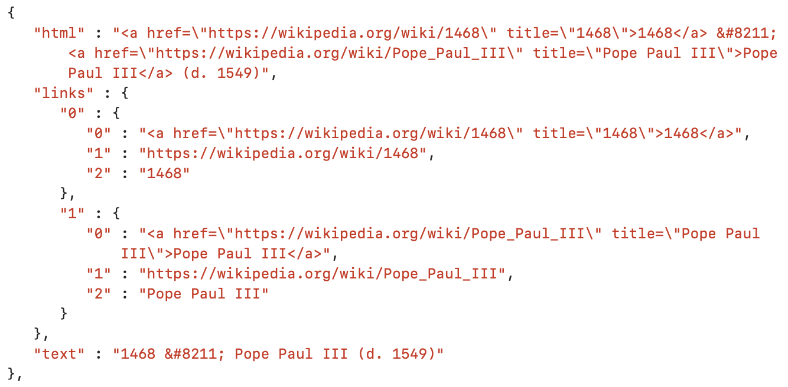
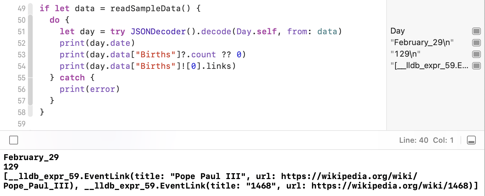
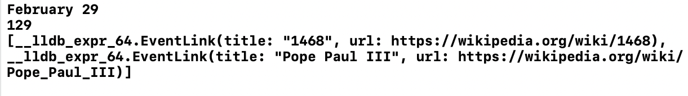
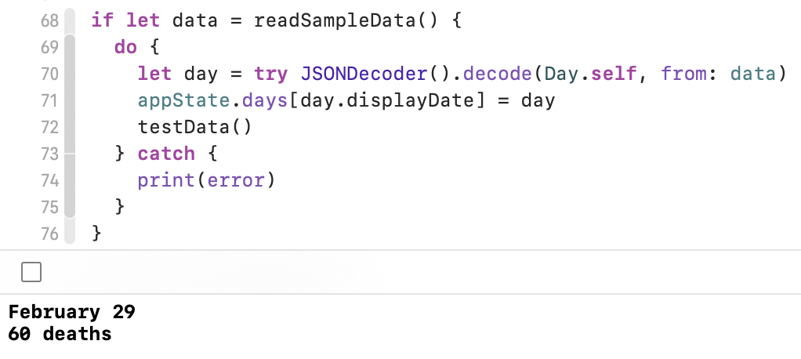
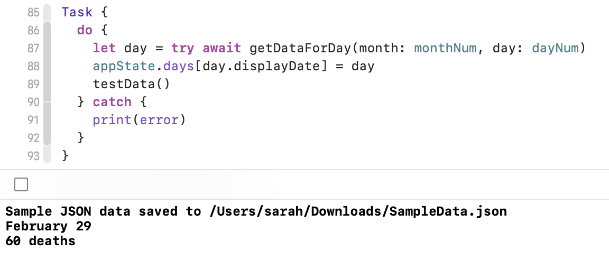

1 Designing the Data Model¶
In this section, you’ll build a SwiftUI app called On This Day that pulls notable events for a day from an API and displays them in various ways. The app uses an interface style that appears in many macOS apps with a navigation sidebar, details area, toolbar, menus and preferences window. You’ll end up with an app that looks like this:

When starting a new app, it’s very tempting to jump right into the interface design, but this time you’re going to start by working out the data models. There are two reasons for this. First, in a SwiftUI app, the data drives the display, so it makes sense to work out the data structure before you start laying out the interface. Secondly, this data comes from an external source and may not have the structure you’d like. Spending some time now to analyze and parse will save you a lot of time and effort later on.
In this chapter, you’ll use a playground to fetch the data, analyze the structure and create the data models for the app.
Data model design is a vital first step in the development of any app, so working through this chapter will be a valuable experience. But, if you’re already familiar with downloading data, parsing JSON and creating data structures and classes, feel free to skip ahead. In Chapter 2, “Working With Windows”, you’ll download and import the data model files used in this section and start building the user interface.
Where is the Data Coming From?¶
You’re going to use the API from ZenQuotes.io. Go to today.zenquotes.io in your browser and have a look around the page. At the top, you’ll see an interesting event that happened on this day in some year and you can scroll down to see more:

Keep scrolling and you’ll get to the Quick Start where they show you the format of the link to get the data. Check out the Usage Limits, too. When testing, it’s easy to hit this limit, so one of your first tasks is to download a sample set of data to work with.
Click the documentation link to get more information on the structure of the JSON returned by the API call. You’ll get to explore that in detail over the rest of this chapter.
Saving a Sample Data Set¶
Open the playground from the starter folder. It’s a macOS playground set up with some functions to get you going. The most important one is getDataForDay(month:day:), which takes in a numeric month and day, assembles them into a URL and then uses URLSession to download the JSON from that URL.
If the data returned can be converted into a String, you’re going to save it to a file. But where should you save it? Unlike iOS, macOS gives you full access to the file system. The app sandbox may restrict this, as you’ll learn in later chapters, but in a playground, you can access everything. Since this is data you’re downloading, saving it to the Downloads folder makes the most sense, so now you need to work out the file path for the Downloads folder so you can use it.
Working with the File System¶
Your first thought might be to build up the file path as a string. Maybe ~/Downloadswould work. But remember not everyone uses English as their system language. My Downloads folder is at /Users/sarah/Downloads, but if I switch my system language to French, it’s at Utilisateurs/sarah/Téléchargements. So, you can’t assume there will be a folder called Downloads. FileManager is a utility class that provides an interface to the file system, and that’s what you’ll use to get this path.
The Sources section of the playground contains Files.swift, which holds functions for saving and reading the sample data. Expand the Sources section, if it’s not already expanded, and open Files.swift.
Note
If you can’t see the files list, press Command-1 to open the Project navigator.
The first function is sampleFileURL() which returns an optional URL. At the moment it returns nil so replace return nil with this:
// 1
let fileManager = FileManager.default
do {
// 2
let downloadsFolder = try fileManager.url(
// 3
for: .downloadsDirectory,
// 4
in: .userDomainMask,
// 5
appropriateFor: nil,
create: true)
// 6
let jsonFile = downloadsFolder
.appendingPathComponent("SampleData.json")
return jsonFile
} catch {
// 7
print(error)
return nil
}
There’s quite a bit here that may be unfamiliar to you:
- To work with files and folders, you need to use the default
FileManager. Presumably due to its Unix background,FileManagerrefers to folders as directories. FileManagercan try to find the URL to a standard folder.downloadsDirectoryis one of the folders listed in theFileManager.SearchPathDirectoryenumeration, which assigns constants to all the usual folders and avoids any translation problems.FileManager.SearchPathDomainMasklists the possible domains to search. Here, you want to search in the the user’s folder, souserDomainMaskis the right one to choose.FileManagerignores theappropriateForparameter in nearly all searches, butcreate: truetells it to make this folder if it’s missing.- If
FileManagerhas found the user’s Downloads folder, append the sample data file name to create the final URL. - If
FileManagerhad a problem,catchwill print the error and returnnil.
Save Files.swift and return to the playground page.
Getting the Data¶
Since URLSession is using await, getDataForDay(month:day:) is marked as async, and you must call it asynchronously, so its usage is wrapped in a Task. Click the Play button in the gutter beside the last line of the playground and wait while it goes off to the API server, gathers the data and returns it.
Note
If you don’t see a play button in the gutter, your playground is set to run automatically. Long click the play button at the bottom of the code and select Manually Run.
Once the download is complete, you’ll see a message in the console saying the playground has saved the sample data to your Downloads folder:

Go to your Downloads folder and open SampleData.json. On my computer, it opens in Xcode, but you may have a different app set up to open JSON files:

Formatting the JSON¶
Depending on the app you used, it may have formatted the JSON into a more readable form, but as you can see, Xcode has not, so here’s a trick that makes formatting JSON a breeze on any Mac.
Select all the text in the JSON file and copy it. Open Terminal and type in the following line (don’t copy and paste it or you’ll overwrite the JSON that’s in the clipboard).
pbpaste | json_pp | pbcopy
Press Return.
This sequence of three shell commands pastes the clipboard contents to the json_ppcommand, which “pretty prints” it, then uses pbcopy to copy the neatly formatted JSON back into the clipboard. Under the hood, macOS calls the clipboard the pasteboard which is why it uses pbpaste and pbcopy.
Return to your original SampleData.json file, delete the contents and press Command-Vto paste in the pretty printed JSON, then save the file again:

If you make a mistake and lose the sample data, run the playground again to get it back.
Note
To know more about json_pp, go back to your Terminal, right-click the command and choose Open man Page to open the built-in help page in a new window. You can also type man json_pp, but this shows the information in your working Terminal window. Using a new window makes it easier to read and test the command.
Using the Sample Data¶
Now that you have the data saved and formatted, you can start using it instead of calling the API server every time. This is faster and avoids hitting the usage limit.
First, comment out the entire Task section but don’t delete it in case you need to re-fetch the data at any time. Next, add this code to access the saved data instead:
if let data = readSampleData() {
print(data.count)
}
Finally, run the playground again and you’ll see a number showing the amount of data in the sample file:

I deliberately chose February 29 for the sample day to minimize the amount of data. Presumably only a quarter of the usual number of interesting events happened on February 29th. :] You may get a different number as the site adds and deletes events.
Exploring the JSON¶
To make it easier to examine the structure of the JSON data returned, turn on code folding. If you’re using Xcode, go to Preferences ▸ Text Editing ▸ Display and check Code folding ribbon. Now you’ll be able to click in the code folding ribbon beside the line numbers to collapse and expand the data nodes.

By collapsing nearly all the nodes, you can see the root structure of the layout which contains four elements. data and date are the ones you need here. No way of confusing those two. :] You can ignore the info and updated elements.

Inside data, there are three nodes for the three different types of event: Births, Deaths and Events. The data inside each of them has the same structure, so after expanding Births to show the first one, you’ll see this structure:

The three top level elements are html, links and text. If this was for display in a web page, html would be important, but for an app, text is much more useful. Notice how it includes HTML entities and that it starts with the year.
The links section is oddly structured with the keys being numbers inside strings. Each link has three elements with "0" being the full HTML link, "1" containing the URL and "2" holding the text for the link.
Decoding the Top Level¶
Now that you’ve explored the JSON and know what you’re getting back from the API server, it’s time to start decoding it. The overall data model for this JSON will be a structure called Day since it contains the information for a specific day. It’ll have data and date properties. date is a string, so start with that.
First, add this code to the playground:
struct Day: Decodable {
let date: String
}
This establishes Day as a structure that conforms to the Decodable protocol. Since this data will never be re-encoded, there is no need to conform to Codable which is a type alias for Decodable & Encodable.
To test this, replace print(data.count) with this:
do {
let day = try JSONDecoder().decode(Day.self, from: data)
print(day.date)
} catch {
print(error)
}
Then run the playground again and you’ll see “February_29” printed out in the console.
Note
If you ever get an error when running the playground saying that some type cannot be found in scope, this is because you’re running code that comes before the type declaration in the playground. Use the Execute Playground button in the divider between the code and the console instead. You may need to click it once to stop and again to run the playground.
Going Deeper¶
Decoding the data element isn’t so straightforward as there are different types of data inside. So now, it’s time to think about the lower level data models.
You can decode each entry in the “Births”, “Deaths” and “Events” elements into an Event data model. Event needs two properties: text and links — you can ignore html. To set this up, add a new structure to the playground:
struct Event: Decodable {
let text: String
let links: [String: [String: String]]
}
For now, links is an ugly dictionary containing arrays of dictionaries, but this is enough to get it decoding.
Next, insert the new data property into Day:
let data: [String: [Event]]
And lastly, add a second debug print after print(day.date):
print(day.data["Births"]?.count ?? 0)
Run the playground again and you’ll see the date and a number showing how many notable births fell on that day:

The final piece in the puzzle is the links, so create a new structure called EventLink to handle them:
struct EventLink: Decodable {
let title: String
let url: URL
}
This is the important data for each link, but the incoming JSON isn’t structured like this. To process the data as it comes in, Event is going to have do some more work.
Processing the Links¶
Right now, your Event structure is storing its links in a dictionary, which decodes them, but doesn’t make the links easy for the app to use. By adding a custom init(from:) to Event, you can process the incoming JSON into a more usable format.
Replace Event with this version:
struct Event: Decodable {
let text: String
// 1
let links: [EventLink]
// 2
enum CodingKeys: String, CodingKey {
case text
case links
}
// 3
init(from decoder: Decoder) throws {
// 4
let values = try decoder.container(keyedBy: CodingKeys.self)
// 5
text = try values.decode(String.self, forKey: .text)
// 6
let allLinks = try values.decode(
[String: [String: String]].self,
forKey: .links)
// 7
var processedLinks: [EventLink] = []
for (_, link) in allLinks {
if let title = link["2"],
let address = link["1"],
let url = URL(string: address) {
processedLinks.append(EventLink(title: title, url: url))
}
}
// 8
links = processedLinks
}
}
It was so clean and simple a moment ago and now look at it! So what’s all this doing?
linkshas changed into an array ofEventLinkobjects.- As the structure is going to decode the JSON manually, the decoder has to know what keys to use.
- The structure now has a custom
init(from:)for decoding. - Use
CodingKeysto get the data values from the decoder’s container for the specified keys. - Decode the
textelement fromvalues. This doesn’t need any further processing before assigning it to thetextproperty. - Decode the
linkselement as a dictionary. - Loop through the values in the dictionary and try to create an
EventLinkobject from each one. - Assign the valid entries to
links.
To test this, add a third debug print statement under the other two. It force-unwraps the array of Births, which is a bad idea in production but is fine in a testing playground:
print(day.data["Births"]![0].links)
Now run the playground and this time, it’ll take a while to finish. As Event.init(from:)loops, you’ll be able to see the counters on the right. Doing multiple loops is something that playgrounds struggle with, but this is very fast inside an app.
The link output isn’t very readable, but you can see they’re all there, each with a title and a URL:

Making Day Easier to Use¶
Now that you’re decoding the JSON and have set up the basic data structure, it’s time to consider how the app will use this data and what you can add to make this easier.
Looking at Day first, it would be convenient to have a more direct way of accessing the various categories of events instead of using an optional like day.data["Births"]each time.
There are three types of events, so to avoid using magic strings as dictionary keys, start by adding this enumeration which describes them:
enum EventType: String {
case events = "Events"
case births = "Births"
case deaths = "Deaths"
}
Conventionally, the cases in an enumeration start with a lower case letter, but the raw string values are set to the title case strings that appear in the JSON so they’ll work as keys to the data dictionary.
With the enumeration in place, add these computed properties to Day:
var events: [Event] { data[EventType.events.rawValue] ?? [] }
var births: [Event] { data[EventType.births.rawValue] ?? [] }
var deaths: [Event] { data[EventType.deaths.rawValue] ?? [] }
These properties use the raw value to return an array of the relevant events or an empty array.
Now, you can change the inelegant debug print statements so they use no optionals and no force unwrapping:
print(day.births.count)
print(day.births[0].links)
The second feature that would be useful in Day is a nicer way to show the date. Right now, there’s an underscore between the month and the day. You could use a custom init(from:) to change the way you decode it, but you’re going to use another computed property. Add this to Day:
var displayDate: String {
date.replacingOccurrences(of: "_", with: " ")
}
To test this, change the first of the debug print statements to:
print(day.displayDate)
Run the playground again to see updated date string:

Not much different to see here except for the formatted date, but you accessed the information much more easily.
Identifying Data Objects¶
Take a moment to think about how your app might display the information in Day. displayDate is a String and all ready for use. Then you have the arrays containing Events and EventLinks, which the views in your app will need to loop through in some manner. When looping through arrays of data in SwiftUI, it’s important that each element has a unique identifier. This allows the SwiftUI engine to track which elements have changed, moved or disappeared, so it can update the display as efficiently as possible.
The best way to do this is to make the model structures conform to Identifiable. This protocol requires the conforming type to contain a property called id, which can be anything, but is usually a string, a number or a unique ID. Some data might arrive with IDs already. In this case there’s nothing obviously unique, so you’re going to add a UUID to each Event and EventLink.
Starting with EventLink, edit the structure declaration to include Identifiable and add an id property:
struct EventLink: Decodable, Identifiable {
let id: UUID
let title: String
let url: URL
}
This causes a “Missing argument” error in init(from:) where EventLink objects are created. Let Xcode apply its suggested fix and replace the placeholder with UUID() so the code that creates each EventLink ends up like this:
processedLinks.append(
EventLink(id: UUID(), title: title, url: url))
For Event, you want to do something similar. Add Identifiable and an id property but, in this case, the declaration will initialize the UUID. Replace struct Event: Decodable { with:
struct Event: Decodable, Identifiable {
let id = UUID()
If you had used this technique for EventLink, you’d have seen a warning about an immutable property which won’t be decoded. This isn’t a problem with Event, because you’ve set up the CodingKeys, which tell the decoder which properties to use and which to ignore.
Tidying up the Event Text¶
Now that you’re prepared for looping through the events and links, it’s time to look at the text for the events. In your debugging print statements, replace the line printing out the links with this one and run the playground again:
print(day.births[0].text)
In the console, you’ll see “1468 – Pope Paul III (d. 1549)” or something similar. You can see the text string starts with the year and then uses the HTML entity for an en dashto separate this from the information. For display purposes, it seems like it’d be useful to separate out these two parts into distinct properties.
First, add a year property to Event. You may be tempted to convert the year into an Int, but remember that some events will have happened a long time ago and may include “BC” or “BCE”, so the years need to remain as strings.
let year: String
Replace the line in init(from:) that sets text with this:
// 1
let rawText = try values.decode(String.self, forKey: .text)
// 2
let textParts = rawText.components(separatedBy: " – ")
// 3
if textParts.count == 2 {
year = textParts[0]
// 4
text = textParts[1].decoded
} else {
year = "?"
// 4
text = rawText.decoded
}
What’s going on here?
- Decode the
textelement fromvaluesexactly as before, but assign it to a constant. - Split
rawTextusing the HTML entity with a space on either side. - If the split resulted in two parts, assign the first to
yearand the second totext. If the text didn’t contain the entity or contained it more than once, setyearto a question mark andtextto the complete value from the decoder. - Decode any HTML entities in the text using the
Stringextension from the start of the playground.
Time to add yet another debug print statement:
print(day.births[0].year)
Run the playground again and you’ll see something like this:

Bringing it All Together¶
So far, you’ve created a series of data structures: Day, Event and EventLink. Now, it’s time to pull them all together into an ObservableObject, which is the primary data model in your app.
Add this definition to the playground:
// 1
class AppState: ObservableObject {
// 2
@Published var days: [String: Day] = [:]
// 3
func getDataFor(month: Int, day: Int) -> Day? {
let monthName = Calendar.current.monthSymbols[month - 1]
let dateString = "\(monthName) \(day)"
return days[dateString]
}
}
There are a few important things to look at here:
- Unlike the other data objects, this object is a class and it conforms to
ObservableObjectso your SwiftUI views can watch it and respond to any changes. daysholds a dictionary ofDaydata objects, indexed on their date. This uses the@Publishedproperty wrapper, which means any SwiftUI views observing this object get notified whenever this property changes.- Finally, there is a convenience method for returning a
Dayfor the supplied month number and day number, if it’s available.
To test this, go to the top of the playground and add these lines just after the importline:
let appState = AppState()
let monthNum = 2
let dayNum = 29
func testData() {
if let day = appState.getDataFor(
month: monthNum, day: dayNum
) {
print(day.displayDate)
print("\(day.deaths.count) deaths")
} else {
print("No data available for that month & day.")
}
}
This creates an AppState object, sets a test month and day and then adds a function for testing the result. These definitions need to be at the top because playgrounds run from top to bottom and these have to be set up before anything tries to use them.
Scroll back down to where you read the sample data file and printed out some debugging information. Replace all of the print statements with the following:
appState.days[day.displayDate] = day
testData()
Run the playground and you’ll see a result like this in the console:

Testing with Live Data¶
As a final check, how about re-enabling the actual download and making sure your code can process live data correctly? Right now, the download saves the data to a text file, so you need to change the download function to make it decode this data into a Day and return it.
First, find getDataForDay(month:day:) and replace its signature line with this one which sets it to return a Day:
func getDataForDay(month: Int, day: Int) async throws -> Day {
Next, below where you save the data to a file, add this chunk, which attempts to decode the downloaded data into a Day and throws an error if it can’t:
do {
let day = try JSONDecoder().decode(Day.self, from: data)
return day
} catch {
throw FetchError.badJSON
}
Finally, comment out the entire code block that begins if let data = readSampleData() { and add the following after it:
Task {
do {
let day = try await getDataForDay(
month: monthNum, day: dayNum)
appState.days[day.displayDate] = day
testData()
} catch {
print(error)
}
}
Xcode tip: Click the code folding ribbon to the left of
if let data = readSampleData() {to collapse the block into a single line. Triple-click the collapsed line to select the entire block, then press Command-/ to comment it out.
This is very similar to the Task you used to get the sample data, but this version waits for the decoded Day to come back, adds it to appState’s days and calls the test function.
If there was a download error or a decoding error, the catch block will print it out.
Click the Execute Playground button again. You’ll see a message reporting the saved file path, and then you’ll see the debug report.

For fun, try changing monthNum and dayNum at the top of the playground and running it again to fetch some different data. Add more print statements to testData() if you want to see what you’ve got.
Key Points¶
- Designing your data model is an important step in app building.
- Playgrounds make iterating through the data design much easier than doing it in an app where you have to build and run after each change.
- macOS gives you much more access to the file system, which you can work with using
FileManager. - When getting data from an external source, you have no control over the format, but it’s still possible to process the data to suit your app.
- Computed properties are useful for making specific data easily accessible.
- If you were building an iOS app, you could have gone through a similar process with similar code. This is a solid way to start developing any app.
Where to Go From Here?¶
This chapter may have seemed like hard work when you wanted to get started building a real macOS app, but in the next chapter, you’ll see how this preliminary work means that the app can start taking shape quickly.
If you’re interested in learning more about async/await networking, check out these links:
- Apple — Meet async/await in Swift
- raywenderlich.com — async/await in SwiftUI
- raywenderlich.com — WWDC 2021: Intro to async/await